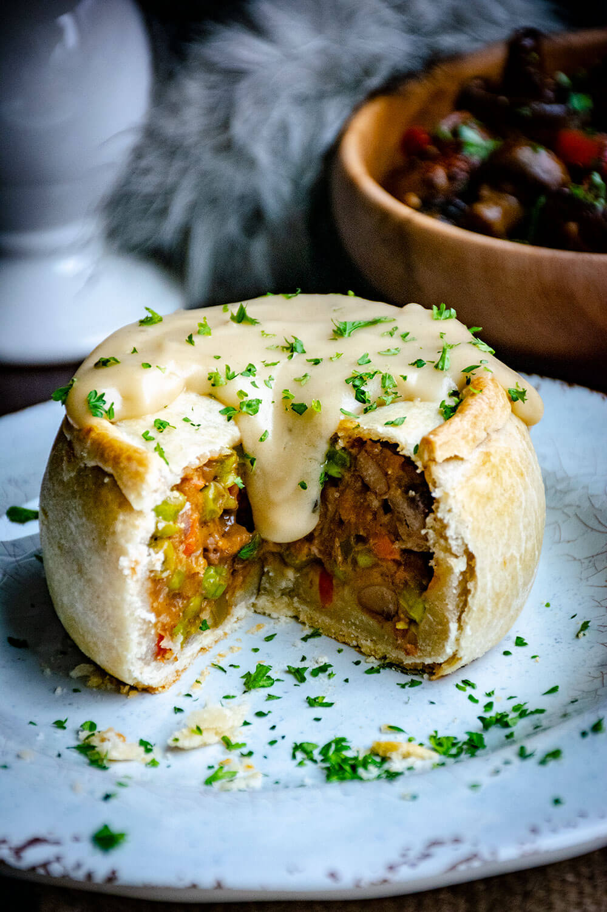

Kidney Pies

Old Nan's Kidney Pie
A very hearty kidney pie filled with lamb kidneys, steak, and vegetables in a tastfull crust.
Ingredients
Crust
- 2 1/2 cups flour
- 6 tablespoons lard
- 1 3/4 cup water
- 1/8 teaspoon sea salt
- 1 tablespoon water + 1 egg whisked
Kidney Pie Filling
- 16 oz steak chopped
- 2 small lamb kidneys chopped
- 1/2 cup flour
- 2 strips bacon
- 1 cup peas
- 1 cup onion diced
- 1/2 cup red and green bell peppers diced
- 1/2 cup carrots chopped
- 1 tablespoon tomato paste
- 12 oz beer
- 2 tablespoons sherry
- fresh parsley for topping
Gravy
- 3 tablespoons lard
- 1/2 cup flour + more as needed
- 2 cups beef broth
- 1 tablespoon oregano
- 1 teaspoon salt
- 1/8 teaspoon pepper
Instructions
- Begin by preparing the crust. First, combine the lard, water, and salt in a small pot over high heat. Stir until the lard has completely melted and the water comes to a light simmer. Remove from the heat.
- Pour the flour into a mound on a large flat work surface. Use the bottom of a bowl or measuring cup to create a small well in the center – it should be deep enough to contain the water. Pour the water into the well and use a wooden spoon to stir the water into the flour until a sticky dough begins to form. Then use your hands to fold more flour into the dough until it begins to take on a ball shape.
- Knead the dough until smooth, about 10 minutes, adding more flour as needed to create a soft dough. When the dough no longer sticks to your hands, transfer it to a greased bowl and cover with a towel. Chill the dough for 3-4 hours.
- Pat the meats dry with a paper towel. Mince the meat into small chunks less than an inch big. Combine the meats in a small bowl with a half cup of flour. Let the flour absorb the moisture from the raw meat.
- In a large skillet over high heat, add the strips of bacon and fry until crisp – about 4-5 minutes. Remove the bacon from the skillet but leave the grease.
- Sauté the onions in the bacon grease until they are beginning to turn translucent, about 5 minutes. Then stir in the carrots. When the onions are beginning to brown, add the peppers, garlic, and peas to the skillet. Cook until the peas have brightened in color, about 2-3 minutes, then reduce the heat to medium. Stir in the tomato paste and cook until fragrant.
- Deglaze the skillet with a splash of sherry. Simmer off the liquid then add the meat to the skillet and stir it into the vegetables. Cook the meat for a few minutes to brown. Then pour the beer into the skillet. Return the heat to high and bring to a rapid boil. Simmer off the excess liquid, stirring occasionally – about 30-40 minutes.
- Remove the filling from the skillet and place it into a large bowl. Crumble the bacon and stir it into the filling. Cool until the mixture is no longer steaming – at least one hour or until the filling is room temperature. If the meat mix is too warm, the dough will not stay together.
- Meanwhile, in a small saucepan over medium-high heat, melt the lard for the gravy. Whisk in the flour and beef broth until a smooth roux-like sauce forms. Season with oregano, salt, and pepper to taste. Bring the gravy to a bubble then cover and reduce the heat to medium-low to low. Cook the gravy, stirring occasionally until the pies have finished baking or at least 1-2 hours.
- Bring the dough to room temperature. Separate the dough into 4-6 evenly sized balls about the size of a baseball. Then tear off about a tablespoon of dough from each ball. These smaller balls will be the tops of the pies. Use a rolling pin to roll the smaller balls flat – they should be about 1/4 to 1/8 inch thick and about 2-3 inches round disks.
- Working one dough ball at a time, use the bottom of a drinking glass or smooth-bottomed measuring cup to press into the center of the dough balls. Gently pull the edges of the ball up around the bottom of the glass so that they cover the bottom 2-3 inches of the glass. Basically, use the glass to make 'cups' out of the dough. The dough should stand on its own for the most part when the glass has been removed from the center of the dough and be about 1/4 to 1/8 inch thick.
- Press the filling into the center of each dough 'cup' – pack it in tightly. Then take the small top disks and place them on top of the filling. Pinch and tuck the edges together. Use a sharp knife to pierce the tops of each pie so that the pie can vent as it cooks. Chill each pie as you complete them or for about 30 minutes to set the dough.
- Preheat the oven to 400°F. Brush the pies with egg wash on the tops and sides. Bake for 30-40 minutes until the pies are golden brown. Remove the pies from the oven and let them rest at least 10 minutes prior to cutting for best results. Slather each pie with a generous helping of gravy. Enjoy with a flagon of ale and feed any leftovers to your direwolf.
Home Page